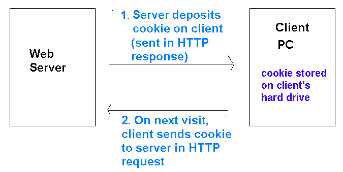
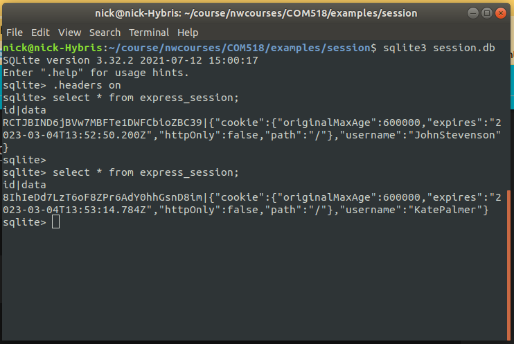

Today we will take a look at session variables and how we can use them in Node.js. We will also look at how we can make use of session variables when developing login systems. As part of our discussion we will introduce the concept of middleware.
Before looking at session variables, we will quickly take a look at cookies. You may have come across cookies before: they are data saved on your machine by a website when you visit it. They are stored in an area of your machine known as the cookie jar and are sent to your browser embedded within the HTTP response. Next time you visit the site, the cookie is sent back to the site via the HTTP request, and thus the site can "remember" data saved by it at the time of the last visit. Cookies can be used for various things, both benign and controversial. For example:
Consequently a user needs to be careful with cookies. It is now law that a site which uses cookies for non-essential purposes must allow the user to turn such cookies off, and this functionality must be clearly visible to the user.
The diagram below shows how cookies work:

Having looked briefly at cookies, we will now start to look at session variables.
Most server-side technologies can use session variables. Some technologies, such as PHP, come with session variables enabled by default as part of the core distribution. With node.js, we have to use a third-party module depending on which server framework we are using. With Express, the usual module is express-session which can be installed in the normal way:
npm install express-session
express-session will create session cookies and send them back to the client automatically, and also retrieve session cookies from clients and use them to work out the correct session variables for that user. express-session will store session data in a session store. You can configure express-session to tell it which session store to use. By default, it uses an in-memory store, but this is regarded as insecure. Instead, it is better to use whichever database you are using to store the session data, which in our case will be SQLite. So we will need to install the express-session-better-sqlite3 module:
npm install express-session-better-sqlite3The module will store the data in a table called
express_session by default, which you might want to look at to see exactly how the session data is stored. Each entry in express_session contains a JSON object with the session ID plus the values of the session variables themselves.
This code demonstrates how we can require and setup the express-session and express-session-better-sqlite3 modules. First we import the two modules, as well as express and better-sqlite3:
import express from 'express'; import Database from 'better-sqlite3'; import expressSession from 'express-session'; import betterSqlite3Session from 'express-session-better-sqlite3';
Then we create an SQLite database to contain the session data, and using it and the expressSession object, create an object for creating a store.
// Create sqlite database to store sessions
const sessDb = new Database('session.db');
// create on object for creating the session store
// SqliteStore is similar in concept to a class
const SqliteStore = betterSqlite3Session(expressSession, sessDb);
Once we have done this, we can initialise the Express session object itself. You have to specify quite a few options: these are summarised in the comments accompanying the code and explained in more detail on the NPM page for the module. The options below should be good for use with the SQLite3 session store and common web applications.
app.use(expressSession({
// Specify the session store to be used.
store: new SqliteStore(),
// a secret used to digitally sign session cookie, use something unguessable (e.g. random bytes as hex) in a real application.
secret: 'BinnieAndClyde',
// regenerate session on each request (keeping the session active)
resave: true,
// save session to store before data is stored in it (disabled as this unnecessarily creates empty sessions)
saveUninitialized: false,
// reset cookie for every HTTP response. The cookie expiration time will be reset, to 'maxAge' milliseconds beyond the time of the response.
// Thus, the session cookie will expire after 10 mins of *inactivity* (no HTTP request made and consequently no response sent) when 'rolling' is true.
// If 'rolling' is false, the session cookie would expire after 10 minutes even if the user was interacting with the site, which would be very
// annoying - so true is the sensible setting.
rolling: true,
// destroy session (remove it from the data store) when it is set to null, deleted etc
unset: 'destroy',
// useful if using a proxy to access your server, as you will probably be doing in a production environment: this allows the session cookie to pass through the proxy
proxy: true,
// properties of session cookie
cookie: {
maxAge: 600000, // 600000 ms = 10 mins expiry time
httpOnly: false // allow client-side code to access the cookie, otherwise it's kept to the HTTP messages
}
}));
The code above will set up the session using the given session store. Note how expressSession() returns a middleware function which sets up the session, which is then used by the application.
However, how do we actually store data in session variables?. We can use the object req.session, which is setup as soon as you have initialised your session as above. For example, we could use code such as:
req.session.name = 'Fred Smith';
to setup a session variable called name. This session variable could then be used by all subsequent requests, until the session is deleted. To end a session, we can set the session to null which, as described in the comments above, will destroy the session and remove it from the database:
req.session = null;
A common use of session variables is in site authentication. In authentication, the user must enter a username and password to gain acces to the site. What happens is as follows:
req.session.usernamereq.session to null, as described above, thus terminating the session.Here are some routes (an extract from a full server) to manage authentication. Note how we send the HTTP code 401 (Unauthorized) if the login details are incorrect.
// Login route app.post('/login', (req, res) => { if(req.body.username == 'SimonSmith' && req.body.password == 'secret' ) { req.session.username = req.body.username; res.json({success: 1}); } else { res.status(401).json({error: "Incorrect login!"}); } }); // Logout route app.post('/logout', (req, res) => { req.session = null; res.json({'success': 1 }); }); // 'GET' login route - useful for clients to obtain currently logged in user app.get('/login', (req, res) => { res.json({username: req.session.username || null} ); });What do these routes do?
/login POST route checks the POST data sent to it, specifically the username and password fields. Here, it simply checks that they are equal to SimonSmith and secret respectively. If the details are correct, the supplied username is stored in a session variable (req.body.username). This is a deliberately simple example: in a more realistic example it would need to check the username and password are in the users table in the database./logout route sets req.session to null and in doing so, removes the session from the session store. This will mean that req.session.username will no longer exist./login GET route. This returns the currently logged-in user within a JSON object, or null if a user is not logged in. This can be used by clients (e.g. AJAX front ends) to display the currently logged-in user in the UI.We've looked at how we can implement a login route. However, the other thing that we have to do is prevent certain endpoints being accessed to non-logged -in users. How can we do that? One way is simply to add a session check in every route which we need to protect:
app.post('/addProduct', (req, res) => {
if(req.session.username == null) {
res.status(401).json({error: "You're not logged in. Go away!"});
} else {
// code to add a product to the database
}
});
This works, but it quickly becomes repetitive, adding the same check to every route which needs it. To more efficiently "protect" multiple routes, we can make use of middleware.
Middleware is code which runs in between two application components, modifying or verifying data passed between those components in some way. In the context of web APIs, middleware consists of code which runs after the request has been received, but before a request is handled with a route. In Express, each piece of middleware is a function which
can modify the req and res objects. It is typically
used to prepare the request before it's handled, or intercept requests to perform operations such as logging. express.json(), which you have already seen, is actually middleware. It parses JSON from the body of the incoming HTTP request and adds a body property to the req object allowing you to easily access POST data. Without the middleware, the body property of req would not exist.
Middleware is included with the use() method of your app
object, or with get() and post() if you only want a certain piece of middleware to run with GET and POST requests, respectively.
You've already used middleware, in fact, perhaps without realising it. Remember how we use express.json() to allow our Express server to handle JSON sent to it via the request body. Note how it is included with use():
app.use(express.json());So in fact we are using middleware here. Specifically, the middleware is parsing the JSON sent through the request body into a JavsScript object and adding it to the
req (request) object as req.body.
You will frequently want to write your own middleware. An item of Express middleware is simply a function which takes three parameters - described below - and can examine the request or modify the request and/or the response. The three parameters taken by a middleware function are:
req);res);next).use() it from our Express application object.
Here is a simple example of a middleware that will run on any request. This will simply log the time of any request. Note that new Date() creates a date object representing the current time and toLocaleString() formats the date using the convention for the locale (language/country combination) that the server is configured for.
import express from 'express';
const app = express();
app.use( (req,res,next) => {
console.log(`Received a request at ${new Date().toLocaleString()}`);
next();
});
app.get('/', (req,res) => {
res.send(`Hello world!`);
});
app.listen(3000);
Note how use() expects a function which takes request and response
as parameters, the same as the route handlers, as well as next. This example writes a message to the console informing the user of the time of the request.
Notice the call to the next(); function (also passed as a
parameter to use()). This calls the next function in the middleware chain.
What do we mean by this? It is important to note that we can specify multiple items of middleware via multiple use() calls. Each item of middleware is called in the order it is specified, as long as next() is called from the previous item. So, if another middleware function is specified after this one, it will be called with next(). If there is no middleware after this one, the route handler itself will be called with next().
The diagram below shows how the request can pass through multiple items of
middleware before reaching the route handler:
We can use routes to specify that a given middleware will only run before handling a particular route. This can be useful as, we might want certain middleware to only run in response to certain requests. We do this by supplying an optional first argument to use() to specify which routes will run this middleware. For example, the middleware below (showing the time of the request once again) will only run with a route of search followed by a search term:
import express from 'express';
const app = express();
// Note that middleware only runs with /search/:query route
app.use( '/search/:query', (req,res,next) => {
console.log(`Received a request at ${new Date().toLocaleString()}`);
next();
});
// Middleware not called
app.get('/', (req,res) => {
res.send(`Hello world!`);
});
// Middleware called
app.get('/search/:query', (req,res) => {
res.send(`Searching for ${req.params.query}...`);
});
app.listen(3000);
Furthermore, we can specify that middleware will only run for specific HTTP methods (GET, POST, DELETE, etc). We do this by replacing use() with a function representing the HTTP method (get(), post() etc). A good real-world use of this would be to prevent access to routes which modify data (POST, DELETE, PUT) unless you're logged in. For example:
import express from 'express';
const app = express();
// This middleware will only run with POST requests, due to the use of
// app.post() rather than app.use()
// * means 'match all', so this middleware will run with all POST requests
app.post( '*', (req,res,next) => {
console.log(`Received a POST request at ${new Date().toLocaleString()}`);
next();
});
// Middleware not called
app.get('/', (req,res) => {
res.send(`Hello world!`);
});
// Middleware called, because it uses post()
app.post('/product/new', (req,res) => {
// Code to add a product to the database
});
app.listen(3000);
You can use multiple items of middleware in one use(), get() or post() call. You specify each middleware function as a successive parameter, so that the syntax is:
app.use('/route', middleware1, middleware2, middleware3...);
So, for example:
app.use( '/testroute', (req, res, next) => {
console.log('Running middleware 1')
next();
},
(req, res, next) => {
console.log('Running middleware 2')
next();
}
);
In this example, all requests to /testroute will be intercepted by both specified middleware functions, and both messages will be displayed on the console, in order (the first specified function will run first).
As implied in the previous section, you can use middleware to prevent the route ever being called under certain conditions. A good example would be to implement a check that the user is logged in before they can access certain sensitive routes. You can prevent access to given routes by only calling next() if a certain condition is met, otherwise you send back a response (from the middleware) indicating that the main route cannot be processed. So here is an example which tests for the existence of the username session variable before allowing access to any POST or DELETE route.
// Middleware which protects any routes using POST or DELETE from access by users who are are not logged in
app.use( (req, res, next) => {
if(["POST", "DELETE"].indexOf(req.method) == -1) {
next();
} else {
if(req.session.username) {
next();
} else {
res.status(401).json({error: "You're not logged in. Go away!"});
}
}
});
To explain this:
req.method) is contained within the array ["POST", "DELETE"], i.e. we check whether the method is either POST or DELETE. We use indexOf() to do this, which returns the position of an element within an array, or -1 if it is not in the array.indexOf() will return 0 for POST, 1 for DELETE or -1 for any other method (such as GET).POST or DELETE), we just call next() to forward the user on to the route without checking if they're logged in. Otherwise, we check whether req.session.username exists (i.e. whether the user is logged in) and either call next() (if it does exist) or return a 401 Unauthorized error and appropriate error message (if it does not).
Above is an example of a session store. Two users had logged in to the system (John Stevenson and Kate Palmer) and for each, a session was created and stored in the express_session table. The screenshot above shows the express_session table being queried twice (from the SQLite command-line client), once after John Stevenson logged in and again after Kate Palmer logged in. When a user logs in, their username is stored in a session variable (see below). Note how, as a result, each user has an entry in the express_session table. The table has two columns:
id: the session ID, anddata: data about the session, stored as JSON, including information about the cookie and its expiry date, and the session variables themselves. So username the JSON corresponds to the session variable req.session.usernameFor additional security, ensure that passwords are stored as a hashed (unreadable) form in your database, to prevent them being stolen. You can use Node's bcrypt module (which must be installed using npm) for this. For example, to hash (encode) a password when signing up:
import bcrypt from 'bcrypt'; ... const encPass = await bcrypt.hash(pass, 10);The 10 is the number of rounds of encoding to use; 10 is a good compromise between security and performance as each round improves the security of the encoding but takes some time to execute.
bcrypt.compare() to compare the password entered against the hashed password in the table:
const stmt = this.db.prepare('SELECT * FROM users WHERE username=?');
const results = stmt.all(req.body.username);
if(results.length == 1) {
const match = await bcrypt.compare(req.body.password, results[0].password);
if(match === false) {
// passwords don't match
} else {
// passwords do match, carry on...
}
} else {
// ... no results ...
}
See here for more details.
Ensure you have the most recent version of the HitTastic! database
The instructions below assume you are using the DOM. If you would like a challenge, feel free to implement the front-end using React instead.
express-session and express-session-better-sqlite3 on your Week 1 Express server, as shown above./login GET, /login POST and /logout), as well as the session-checking middleware shown above, to your Express server. You should make one important change: the /login POST route should check whether the username and password are contained within the ht_users table, rather than just checking for a hard-coded username and password. To do this, perform your query and then check that the number of rows returned is one by checking the length of the results array, for example:
if(results.length == 1) {
res.json({"username": req.body.username});
} else {
// ... error (as in the example above) ...
}
This code will also return the username as JSON back to the client if the login was successful, which will allow the client to display a Logged in as ... message./login route with an appropriate username and password from the ht_users table. Look at the HTTP response; you should find that a session cookie is contained within it./logout route. This should log you out; look at the HTTP response again and you should find the session ID is no longer there.<div> containing a login form, with username and password fields and a "Login" button. When the button is clicked, send a request to your /login POST route to log the user in. Check the HTTP code sent back from the server (via response.status). If it's 200, display the message 'Logged in as ...' plus the username.
Also, hide the login <div> by setting its display to none:
document.getElementById(...).style.display = 'none';If the status code is not 200, display an error via an alert box.
buy route, an error message telling the user they're not logged in should appear as an alert box. Test it by trying to buy music before the user is logged in (it should not work) and then after they've logged in (it should work).display CSS property to none), but show it when the user has logged in (set its display to inline). When the server returns the response from the /logout route, you should hide the logout button, set the innerHTML of the div containing the "Logged in as ..." message to a blank string, and show the login form again (set its display to block).GET request to the /login route and examine the response. Depending on the response, show or hide the Login form and Logout button, and display the login form and "Logout" button, and the "Logged in as ..." message, as appropriate.buy route so that the balance of the currently logged-in user is reduced by 0.79 when they buy a song.